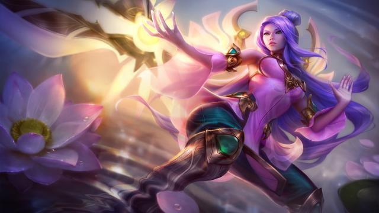
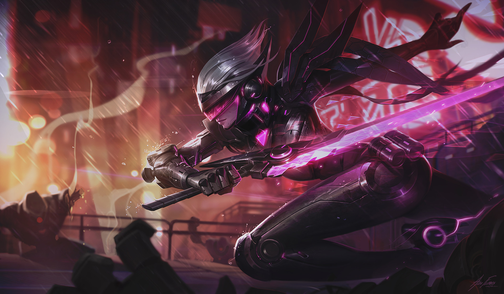

This is Katarina
Katarina is a very mobile champion, she can teleport to her daggers and execute powerful combos to take down her enemy.She isnt a go to top laner but can do very well in top lane. Below is an example of the power of katarina.

This is Irelia
Irelia is a fast paced top laner. she dashes from pinion to minion and sometime uses the minion to get to her enemy.She is based around dashes to kill. Below is an example.

This is Fiora
Fiora is the Grand Duelist of the game. She thrives in 1v1's or even 1v5's. She has high burst single target skills that everyone one should be afraid of. Below is an example of her exquiste skills.